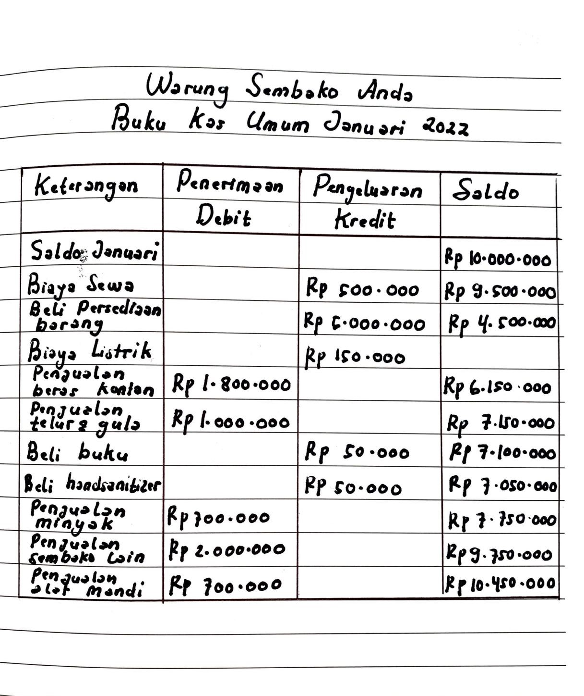

Wealth Wise
Edukasi Keuangan untuk Pelajar

Definisi Literasi Keuangan
Literasi keuangan adalah kemampuan memahami bagaimana uang bekerja — mulai dari cara mendapatkannya, mengelolanya, sampai membuatnya tumbuh. Pelajar yang literat finansial mampu menilai risiko, merencanakan masa depan, dan membuat keputusan cerdas setiap hari.
Keterampilan ini mencakup pengetahuan tentang:
- Pendapatan – misalnya uang jajan, hadiah, pekerjaan paruh waktu.
- Anggaran – menyusun rencana pemasukan & pengeluaran agar kebutuhan utama aman lebih dulu.
- Tabungan & Rekening – menyimpan uang secara teratur untuk tujuan jangka pendek dan darurat.
- Investasi dasar – memahami bahwa uang dapat berkembang (contoh: emas atau reksa dana) dan selalu ada risiko.
- Pinjaman & Utang – kapan berutang itu wajar, kapan berbahaya (terutama pinjol ilegal).
Memiliki literasi keuangan berarti mampu berkata “ya” atau “tidak” pada suatu pengeluaran dengan alasan jelas—bukan sekadar ikut tren. Semakin dini kamu belajar, semakin kuat pondasi finansialmu nanti!